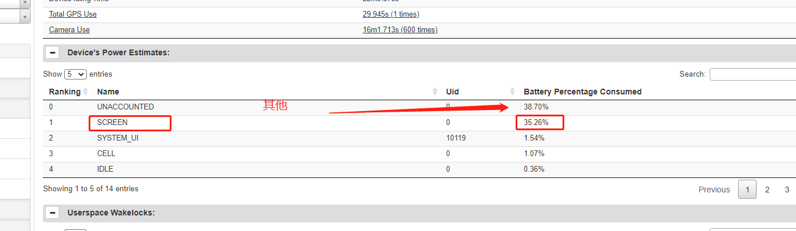

2023年 第32周
2023年8月07日周1
A6650
确认张宏邮件说的问题,大部分都不是问题
指纹解锁慢
修改SW version版本为V0.0.0.2,因为ptcrb认证版本号就是V0.0.0.2
确认mantis A6650下载固件后首次开机，初始化状态的内存占用不达标问题
mantis A6650左侧自定义键工厂程序测试失败，耳机只有一个发声
mantis A6650开机LOGO显示为pax，应显示为兆珑LOGO
2023年8月08日周2
A6650
V03除去无线和esim相关,其他已经测试完毕,总共70笔问题
负责人 |
数量 |
模块 |
|---|---|---|
屈明月 |
3 |
ped,证书 |
肖人涛 |
14 |
扫码,ota |
吴港南 |
2 |
bms,耳机 |
汪小兵 |
1 |
测试部要求添加的设置扫码菜单,有总体设计和需求文档 |
苏东磊 |
2 |
新光感,音频参数 |
宋志豪 |
5 |
拨号 |
石嘉鸣 |
1 |
PedGetPinBlock 误差大 |
罗振辉 |
22 |
摄像头,扫码 |
兰小泉 |
3 |
霸屏模式,谷歌账号,字体对齐 |
郭侥 |
4 |
paxdroid |
郭嘉纯 |
2 |
电子标签,设置隐私政策 |
傅博晨 |
2 |
usb,adb |
段祖光 |
3 |
systemUI |
单亮亮 |
1 |
抬手亮屏 |
谢连雄 |
5 |
视频通话功耗,柱网时间慢 |
王晓瑞功耗分析
稳压源4V交易
看上图,整体还是较为平整,没有什么特别奇怪点,只有前期两个小时有sensor 运行,但对整体功耗影响不大
看上两图对比,具体一个500ma,一个600ma, 看具体wakelock,600ma的多了一些上层申请的wifi还有alarm的wakelock,估计差一点就是这里
电池实际交易
整体还是较为平整,但是图片差一点也较多,需要针对具体问题分析
从图形看,11点44:23之前,500ma, 到11点44:49之后,700ma, 没有什么差别,暂时分析不出来加大200ma的原因

但是从电量消费分析,大头还是屏
wiki 上周报填写
mantis 0047707 柱网慢确认
2023年8月09日周9
A6650
柱网时间,boot_progress_enable_screen 确认
测试是从机器滴一声,到 看到状态栏驻上4G网,算出total时间,然后减去boot_progress_enable_screen时间,得出柱网时间 total 47ms - boot_progress_enable_screen 31ms = 16ms
确认拆装电池后,usb不识别问题,fastboot模式,9008都不识别,看起来是信号没有,硬件飞线量下信号
5.12号软件,大概上次试产的软件,也有同样情况
关机动画没了
2023年8月10日周4
A6650
确认拔电usb不识别是哪个修改导致,7.18号是好的,7.26是坏的
耳机usb切换芯片,asw5480,vcc电源脚(2.8-5v),电压越高,掉电越慢,导致防水功能,异常,usb切换通道也异常
给移远整理NA,EM不带efuse的机器,处理旧屏不显示,tp不能用问题
关机动画没了
2023年8月11日周5
A6650
移远整理不带efuse的机器,驱动屏跟tp
关机动画没了